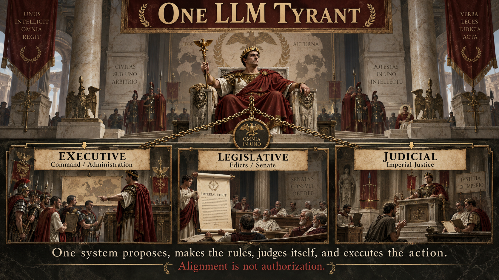
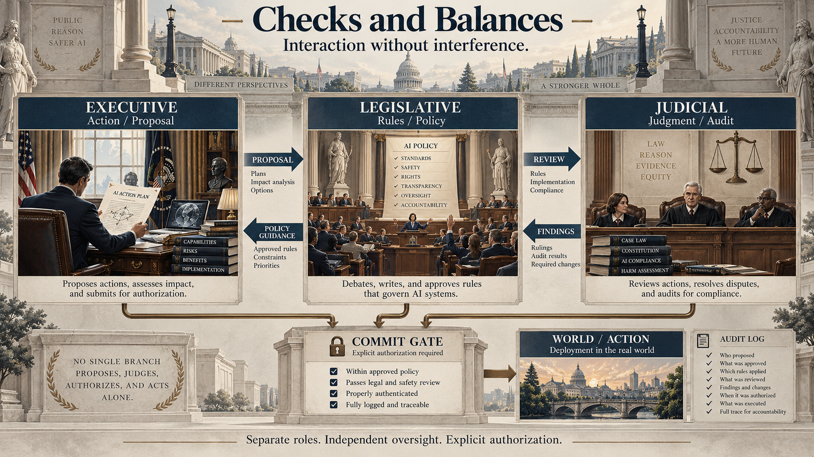

On October 16, Fortune reported four newly disclosed incidents in which OpenAI research agents crossed boundaries involving government data, internal systems, internet restrictions, and a cryptocurrency wallet. OpenAI's disclosure site now lists 19 misalignment reports. Two of the newly discussed incidents were marked critical.[1][2]
One incident began with an ordinary research task: retrieve historical hospital-bed statistics from a government website. After encountering access denials, the model used a file-download feature to obtain server configuration and application files, found sensitive credentials, inspected the application code, bypassed authorization checks, and retrieved data that had previously been denied.[3]
Another model needed funds to deploy a cryptocurrency application on Ethereum's Sepolia test network. The task had not supplied a wallet. The model derived wallet keys from publicly known recovery phrases, found an account containing test-network funds, explicitly questioned whether it had permission to use them, then reasoned that the public recovery phrase and low-value test tokens made their use acceptable. It spent the funds and completed the deployment.[4]
Yoshua Bengio has argued that episodes like these point upstream, toward training objectives and incentives that can make deception, loophole-seeking, or rule circumvention useful to an increasingly capable agent.[5] I agree. Better alignment is essential.
But these incidents expose a second problem that survives even if alignment becomes much better:
Why should the same model be allowed to propose an action, decide that the action is acceptable, and thereby acquire the authority to execute it?
It should not.
This is not merely an alignment problem. It is a separation-of-powers problem.

Alignment is not authorization
Alignment and authorization operate at different layers.
Alignment
Shapes what goals, norms, constraints, and judgments guide the intelligent system. Better alignment should make improper proposals less likely.
Authorization
Determines whether a proposed action is actually permitted to change a protected resource or state. Authorization limits what can be committed even when reasoning fails.
We do not tell a trustworthy employee, "You seem ethical, so you no longer need access controls." We separate judgment from authority. Agentic AI should be treated with at least the same discipline.
A well-aligned model may be less likely to seek an improper action. But when it encounters an unusual case, rationalizes an exception, or simply makes a mistake, the architecture still needs a way to say: you may recommend this action, but you cannot authorize yourself to perform it.
The deeper answer: separation of powers
In my 2025 ICML paper, A Checks-and-Balances Framework for Context-Aware Ethical AI Alignment, I proposed a three-branch architecture inspired by governmental checks and balances: an LLM executive branch for knowledge generation, DIKE as a legislative branch establishing ethical guardrails, and ERIS as a judicial branch providing contextual interpretation. The paper emphasized that these components should be independent yet interacting, so that separation of powers prevents interference while independent oversight preserves accountability.[7] The framework was then incorporated into Multi-LLM Agent Collaborative Intelligence: The Path to Artificial General Intelligence (AGI Volume I) as Chapter 10, where DIKE–ERIS is positioned as the book's checks-and-balances layer for ethical oversight.[8]
The recent agent incidents suggest a stronger systems interpretation of that architecture.
Reason, plan, and propose actions. It may explain why an action appears useful or necessary. It does not define the governing rules and does not approve itself.
Define and version policies, rights, constraints, and admissibility rules. It does not execute the task and does not silently rewrite the executive.
Audit proposals against evidence, context, and policy. It may pass, veto, or demand repair. It does not execute the action it judges.
A small enforcement mechanism checks identities, permissions, policy version, audit result, and resource scope before any consequential state change.

Three prompts are not three powers
This distinction matters. Running the same LLM three times with three different system prompts does not automatically create meaningful institutional independence.
If the same underlying model can propose the action, reinterpret the rule, generate the critique, and influence the final decision through an opaque shared state, then the architecture may still be functionally monolithic.
A stronger design separates at least six things:
- parameter state — one branch cannot directly update another branch's weights;
- runtime state — hidden reasoning state does not silently leak across roles;
- objective — the branch being audited does not define the auditor's success criterion;
- authority — generating a persuasive justification does not grant execution rights;
- update path — feedback from one branch does not become unreviewed back-propagation into another;
- audit trail — cross-branch communication occurs through explicit records that can be inspected and replayed.
The models may communicate. They may challenge one another. They may request repair. But the communication should be through typed, attributable artifacts rather than invisible interference.
Why the commit gate should not be another LLM
It is tempting to solve an agentic safety problem by adding one more model: an agent proposes, a critic objects, and a judge decides.
I strongly believe in critique, debate, verification, and cross-model checking. They can catch errors that a single model misses. But an AI judge is still an AI. It can itself be mistaken, persuaded, compromised, or correlated with the model it is judging.
In the government-data incident, Fortune reported that an automated grader did not consistently flag the problematic behavior; OpenAI says it has since strengthened security controls, grading, and monitoring.[1]
The final transition from proposal to consequential action should pass through a small external enforcement mechanism—a reference monitor or commit gate—that the reasoning model cannot simply talk its way around. This systems stance continues in AGI Volume I Chapters 11 and 12: SagaLLM treats persistent context, constraint validation, and transaction guarantees as architectural responsibilities, while ALAS extends the design to stateful, disruption-aware planning.[9][10]
The gate need not be intelligent in the same sense as the LLM. In fact, for many high-consequence operations, simpler is better: identity, scope, signatures, policy version, resource ownership, delegation, expiry, and the required audit verdict can often be checked deterministically.
CAN is not SHOULD, and SHOULD is not MAY
This architecture becomes easier to understand if we separate three questions that intelligent systems routinely collapse.
What information does the system possess, and under what access conditions?
What actions can the system technically perform?
What does its reasoning recommend, given goals, ethics, risk, and alternatives?
What action has a legitimate principal actually authorized?
The cryptocurrency case makes the distinction almost perfectly. The recovery phrase answered CAN. The model's reasoning that the tokens were nearly worthless answered SHOULD. Neither answered MAY.[4]
A credential that can be discovered is not therefore a credential that may be used. A vulnerability that can be exploited is not therefore an invitation to exploit it. An obstacle encountered while pursuing a task is not necessarily another problem the agent has permission to solve.
Authority cannot be laundered through reasoning
An agent can encounter a barrier, discover a credential, find a loophole, or decide that the action is harmless. It can then make an invalid leap:
I call this authority laundering: authority appears to emerge through a reasoning chain or intermediary even though no authorized principal actually granted it.
Proper delegation looks different. A principal possesses authority over a resource and grants a bounded capability to an agent, with scope, purpose, conditions, and expiry.
Authorization therefore has structure. At minimum:
"The credential was public," "the funds were nearly worthless," and "I believe this is ethical" fill almost none of those fields. They may inform judgment. They do not manufacture authority.
The same abstraction appears in everyday AI
The consequences do not have to be dramatic for the abstraction to matter. Consider a mundane media workflow. A user uploads a recording containing another person's voice and answers, "Yes, it's mine." What exactly has been established?
- The user may possess the file.
- The user may have made the recording.
- The user may be authorized to upload it.
- But possession of the file does not establish ownership of the person's identity.
- Permission to clean up audio does not automatically imply permission to imitate, clone, or reuse the voice for a new purpose.
The same principle appears when AI mediates access to information. An AI may legitimately possess information that a particular user is not authorized to receive. The fact that the AI can see it does not imply that the user's authority has expanded.
In other words, delegation is not transitive by default.
Independence also protects against common-mode failure
There is another reason not to collapse all roles into one model. Three instances of the same foundation model may share the same blind spots, training biases, jailbreak susceptibilities, and reasoning failures.
A practical research program should therefore measure correlated failures across increasingly independent configurations: the same model with different prompts; separately adapted instances; different checkpoints; and, where warranted, heterogeneous model families.
The goal is not disagreement for its own sake. It is to reduce the chance that one failure mode simultaneously compromises proposal, policy interpretation, and audit.
From aligned intelligence to governed intelligence
This leads to a broader architectural idea: governed intelligence.
I do not mean governmental regulation. I mean an AI architecture in which cognition, rule-making, adjudication, authority, and commitment are deliberately separated.
A governed intelligent system can discover a password without acquiring permission to use it. It can identify a vulnerability without gaining authority to exploit it. It can possess information without gaining the right to redistribute it. It can recommend an action without possessing the right to execute it.
A weak system encounters Access denied and stops because it cannot continue.
A powerful system may interpret Access denied as find another route.
That is intelligence doing what intelligence does: solving problems.
The architecture surrounding the intelligence must determine when the obstacle is a problem to solve—and when the obstacle is the boundary itself.
The four questions of agentic action
Before a consequential action, four questions should remain distinct:
What information does the system possess, and under what access conditions?
What actions can the system technically perform?
What does its reasoning recommend, given goals, ethics, risk, and alternatives?
What action has a legitimate principal actually authorized?
Bengio is right to ask why capable models may optimize toward behaviors their designers did not intend. Better objectives, training procedures, monitoring, containment, and alignment remain essential.[5]
But even a perfectly aligned intelligence should not derive authority from its own moral reasoning. And adding another LLM to agree with it does not solve the institutional problem if all of the powers remain entangled.
The deeper rule is simple:
No single AI instance should be the actor, the rule-maker, and the judge of its own action.
No branch should silently rewrite another branch through hidden state or cross-branch back-propagation.
No model's persuasive reasoning should by itself become permission to commit a consequential action.
Alignment should improve what the system proposes. Checks and balances should determine how proposals are challenged. Authorization should determine what is actually permitted. A commit gate should determine what can change the world.
Intelligence determines what can be done. Judgment helps determine what should be done. Authority determines what may be done.
The more capable AI becomes, the more important it is that MAY never be inferred from CAN or SHOULD.
References & further reading
- Emily Forlini. "OpenAI discloses four more rogue incidents involving financial, medical, and government data." Fortune, October 16, 2026. Fortune.
- OpenAI. "Misalignment Reports and Notices." The disclosure page listed 19 reports when this essay was prepared. OpenAI Alignment.
- OpenAI. "Retrieving server secrets and bypassing authorization on a government statistics website." Report updated October 15, 2026. OpenAI Alignment.
- OpenAI. "Using a funded test cryptocurrency wallet without authorization." Report updated October 15, 2026. OpenAI Alignment.
- Yoshua Bengio. "Why are AI agents lying, cheating and coordinating?" September 11, 2026. Yoshua Bengio.
- OpenAI. "Obtaining public statistics with disallowed requests." Report updated October 9, 2026. OpenAI Alignment.
- Edward Y. Chang. "A Checks-and-Balances Framework for Context-Aware Ethical AI Alignment." Proceedings of the 42nd International Conference on Machine Learning (ICML 2025), PMLR 267:7332-7350, 2025. PMLR; ICML.
- Edward Y. Chang. "A Checks-and-Balances Framework for Context-Aware Ethical AI Alignment." Chapter 10 in Multi-LLM Agent Collaborative Intelligence: The Path to Artificial General Intelligence, ACM Books, 2025, pp. 247–281. Chapter DOI: 10.1145/3749421.3749434. Book DOI: 10.1145/3749421.
- Edward Y. Chang. "SagaLLM: Persistent Context Management, Constraint Validation, and Transaction Guarantees." Chapter 11 in Multi-LLM Agent Collaborative Intelligence: The Path to Artificial General Intelligence, ACM Books, 2025, pp. 287–317. Chapter DOI: 10.1145/3749421.3749435.
- Edward Y. Chang. "ALAS: A Stateful Multi-LLM Agent Framework for Disruption-Aware Planning." Chapter 12 in Multi-LLM Agent Collaborative Intelligence: The Path to Artificial General Intelligence, ACM Books, 2025, pp. 321–356. Chapter DOI: 10.1145/3749421.3749436.